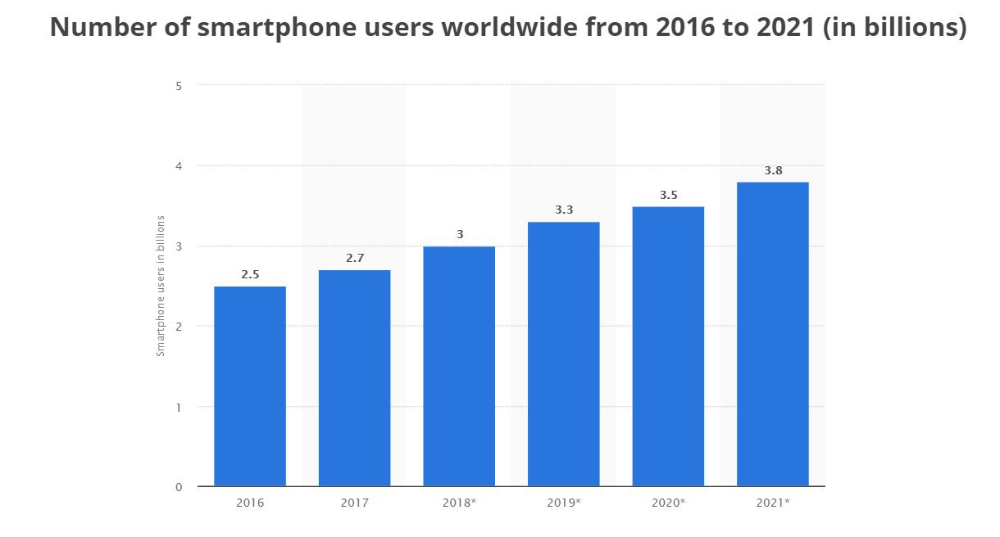
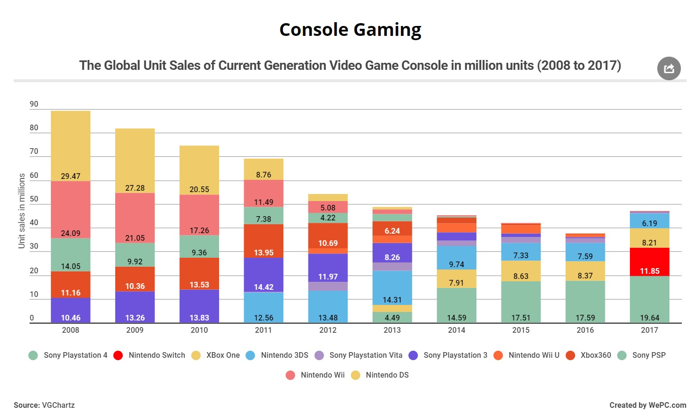
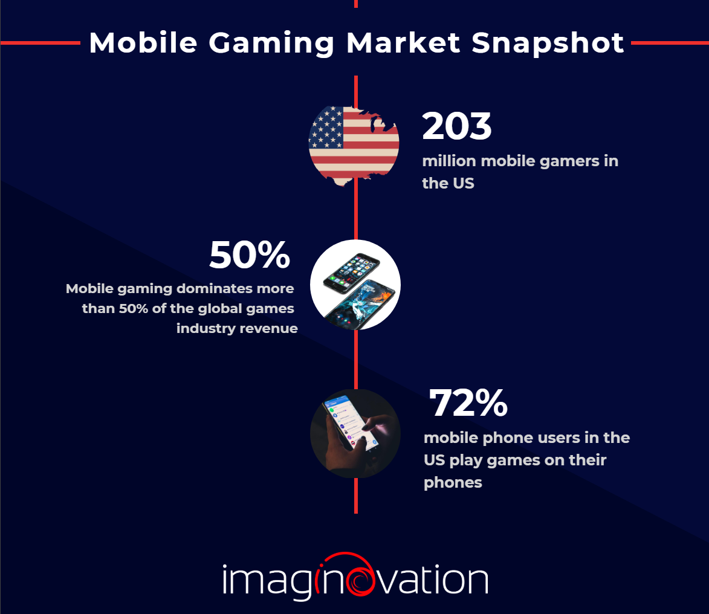
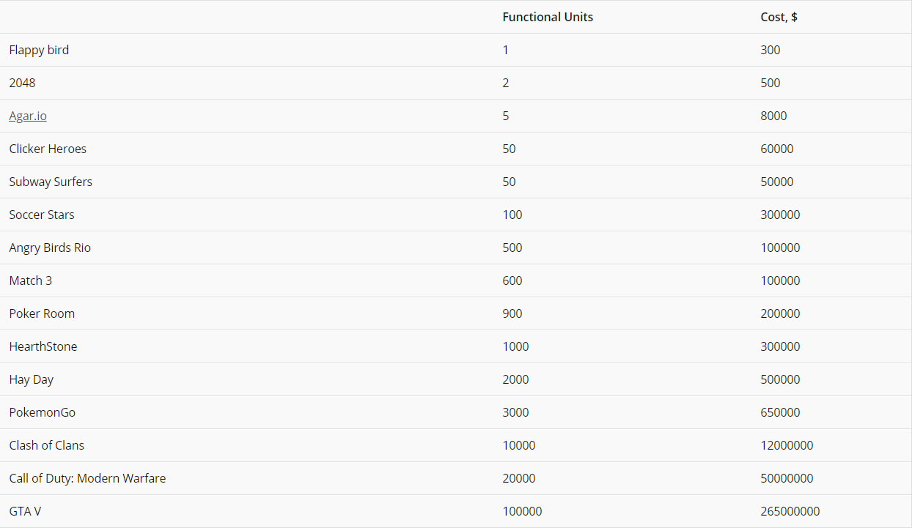
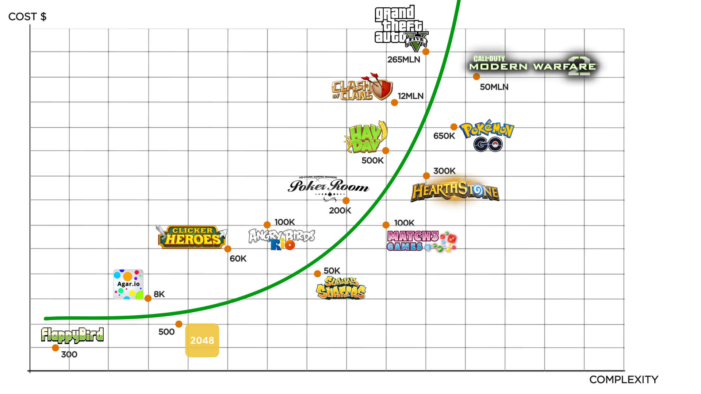
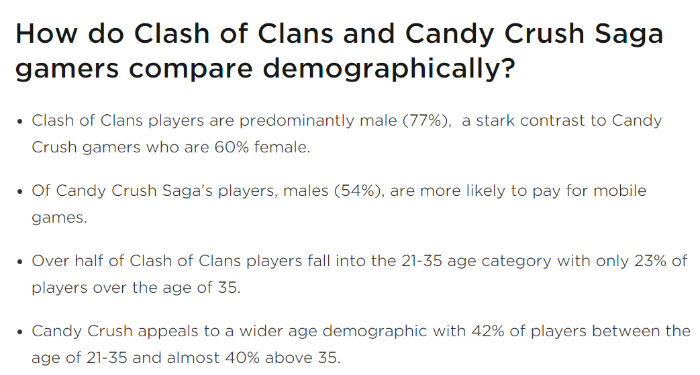

Defending my Claim
Potential Audience
The potential audience is relevant to the discussion because the larger the potential audience is , the more people a game might be marketed to.
The audience for PC gaming would be the owners of Computers or Laptops that do not exclusively use their device for business purposes. Similarly , the audience for Console gaming would be Console owners . The audience for mobile games would be all the owners of smartphones. Below are the statistics for the current owners of Smartphones ,Consoles and PCs. (Holst, A. 2019)
 As the stats show above , Smartphones users are approximately 3.3 billion in number which is way more than console owners and PC owners.
Resources required to develop
One could argue that it isn’t the development costs that matter , but instead , It is the final product of the game. But I am speaking strictly from the developers perspective and nobody knows they have a hit game on their hands until they have invested time and money into making the game. The development cost associated with games depends on a lot of factors such as :
- Graphics (all art assets)
- Complexity of the game
- Time taken to develop
- Whether its a AAA(Developed by a major publisher) , MMO (Massive Online Multiplayer) or a Casual title (Typically Indie developer titles)
- Plot Writing(Only for role playing games)
- Marketing costs
- Intellectual property (Purchase of rights to the brand, a popular character, a series of games, etc.)
- Beta Testing costs
Below is an example of famous games and the approximate costs to develop them.
 As seen in the image above , comparing the development costs of more complex games on mobile and PC and Console. The development cost difference between “Clash of Clans” and “Call of Duty : Modern Warfare 2” is 38 million. In other words , it costed Supercell (developers of Clash of Clans) $38 million less than it costed Activision (parent developing company of Call of Duty: Modern Warfare 2) to develop their game.
Comparing the lower complexity games on different platforms , let’s take the example of Agar.io and Flappy bird. The difference between development costs of the 2 games is $7700 in favor of FlappyBird. (S, Yuri. 2018)
Difficulties of publishing
For indie developers , getting the Steam Direct approval (earlier known as Steam greenlight ) can be a massive headache by itself. Meeting their requirements takes more time and Steam also takes a cut from the sales of the game from the developers in order for the game to be published on Steam . ("Joining the Steamworks," 2017)
Similarly , not just anyone can publish a game on the PSN store or Microsoft store. There are significantly less barriers of publishing when it comes to mobile games as compared to Console and PC.On the other hand , Google Playstore just charges a one-time $25 fee to register as an android developer and then you can publish your game .(Google Play Publishing 2017) Apple’s App Store charges an annual $99 fee to publish your game on their platform. Both of these costs are significantly less than PC or Console platforms.
Age Demographic
The age demographic of console and PC gamers is typically kids and teenagers instead of adults . One of the reasons for this is the fact that adults normally don’t have time to invest into games that require long playtime in order to enjoy them. Since mobile games are accessible to a bigger audience and can be played anywhere , games such as Candy Crush Saga and Clash of Clans have successfully marketed to this untapped market of players. By allowing their gameplay to be extremely divided in such a way that even people with full-time jobs can find 3-10 minutes a day to play and still progress in a steady manner is genius This has also allowed more female gamers to enter into the market.
Below is the demographic comparison between the above mentioned games.
Freedom in terms of the features available to include in the Game
From a developer’s perspective , since mobile is a portable platform and smartphones have certain features included in them , it opens up new possibilities for video games on mobile.(Hjorth, L 2011)
Possibilities such as using the location of the player as a part of the game , the inclusion of a camera inside the game , and touch screen controls.
A very good example of this is Pokemon Go by Niantic.This game took the world by storm as millions of Pokemon fans rejoiced at the opportunity to relive their childhood nostalgia with the game that involves catching Pokemon that spawn in real world locations. As of August 12th 2016 , it had reached 100 million downloads , generated $268 million , 20+ million daily active users and had successfully established a female player base as well. ("Pokémon Go Statistics," 2016)
Profitability of developing
As fun as game design might seem to someone outside the industry , there are some harsh truths about the industry that we must face. Most people in the industry work for at least 10 years without making a single hit (popular) game if they make any at all. Game Designers work 35 hours a week , which may stretch to even 40-45 hours if a deadline is approaching. The industry has a high employee turnover rate , so as a developer ,your job might not be as stable as you would like. To add to all of this stress, the development studio as a whole might shut down due to profitability issues. In this day and age , where piracy for games runs wild , being a developer is hard.
Some indie developer studios just barely survive from one game release to another . However , almost every factor that contributes to low profitability for games on PC and Console , is less true for mobile games. Factors such as Time taken to develop, Complexity of the game , potential audience, etc play a huge role in this. To put it in layman’s terms , A mobile game development studio can put out way more content within the same time period as compared to Console and PC game development studios and more content means more sales.